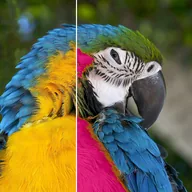

Kleur vervangen

Vervangt een kleur door een andere. Alfa bepaalt hoe sterk de vervanging is; Luminantie vergrendelen behoudt het licht en de schaduw van het origineel.
Instellingen
| Instelling | Type | Bereik | Standaard |
|---|---|---|---|
| Te vervangen kleur | Kleur | – | #FF0000 |
| Nieuwe kleur | Kleur | – | #0000FF |
| Drempel | Getal | 0% tot 400% | 25% |
| Zachte rand | Getal | 0% tot 200% | 25% |
| Alfa | Getal | 0% tot 100% | 100% |
| Luminantie vergrendelen | Aan of uit | – | Uit |
| Inkrimpen | Getal | 0.5 tot 20 | 2 |
| Vergelijken | Keuze | RGB, Chroma | RGB |